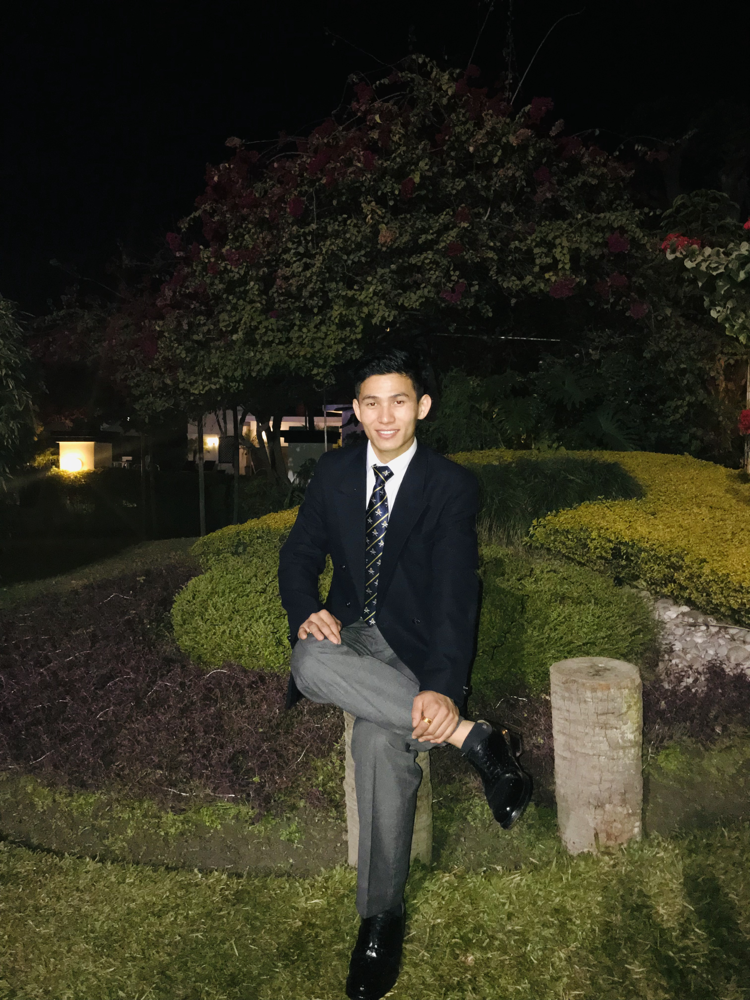

Devloper Tambon

Education
- My academic journey is deeply rooted in mathematics, culminating in my attainment of an A-level in Mathematics. This educational foundation has sharpened my analytical thinking and enhanced my problem-solving abilities.
Work Experience
-
Over a span of ten years in military service (December 2014 - December 2022), I had the distinct privilege of serving as the personal chauffeur to Their Royal Highnesses, the Duke and Duchess. This distinctive role instilled in me the virtues of discipline, teamwork, and unwavering precision. My close association with the Royal Family offered me unparalleled insights into the realms of discretion and dedication, qualities that I have seamlessly integrated into my career in web development.
Award and Certification
-
As the first soldier from my regiment to serve in close proximity to the Royal Family, I acquired invaluable wisdom in discretion and dedication, which continue to enrich my contributions to web development.
Summary
-
I am a resolute individual equipped with a robust educational background in mathematics and a decade of dedicated military service. My fervor for web development is underpinned by my analytical acumen, unwavering discipline, and an unrelenting commitment to precision.
Other
-
Interest
-
Contact